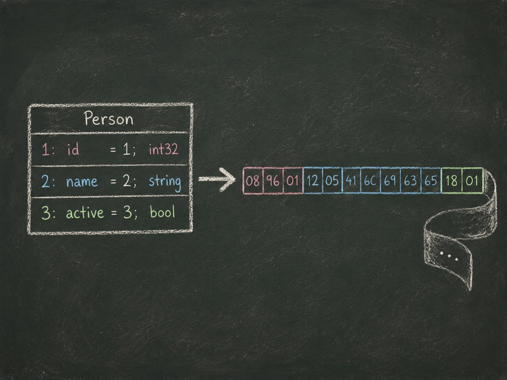

Protobuf
A first-principles tour of schema-based binary serialization: why it exists, how the wire format actually works, how to model real data that has to keep working for years, and how to run it in production across languages and services.

A chalkboard-style illustration: a hand-drawn diagram of a small .proto message (a labeled box with two or three named fields) on the left, connected by a chalk-drawn arrow to a strip of binary bytes unspooling on the right, as if a teacher just sketched it mid-lecture. Dark slate-green chalkboard background, chalk-white line work, soft pastel chalk highlights (dusty rose, powder blue, mint green, chalk yellow) picking out individual fields and bytes, visible chalk dust and a little smudging, no photographic realism, no baked-in text/labels. Warm, patient, slightly dusty classroom mood. Target size ~1200x900px, 4:3; compose for a small on-page figure, subject centred with safe margins since it will be letterboxed into a 4:3 box.
Generate this with your image agent, then drop the file here.
Sixteen lessons, in order
Each chapter builds on the one before it — we go from why the format exists, to how it's laid out on the wire, to modeling data that has to survive years of change, to running it for real across services and languages. Read it front to back the first time through.
Part I · Foundations
Part II · Encoding & Tooling
Part III · Evolution & Interop
Part IV · Production & Beyond
- 11Protobuf in Productionqueued
- 12Performance and Tradeoffsqueued
- 13Storage and Event Systemsqueued
- 14Custom Extensions and Pluginsqueued
- 15Debugging and Common Mistakesqueued
- 16Future of Protobufqueued
→ Cheatsheet: everything on one page